Title cards are text displayed on the screen to convey information to the watcher. In this way, they serve a similar purpose to chapters but may also introduce the video’s title, provide context, or separate individual segments of a video. You can use ClipChamp’s Editor application to create and edit title cards to address different needs.
Create a title card in ClipChamp Editor
Click on Open editor. ClipChamp’s built-in editing software opens.
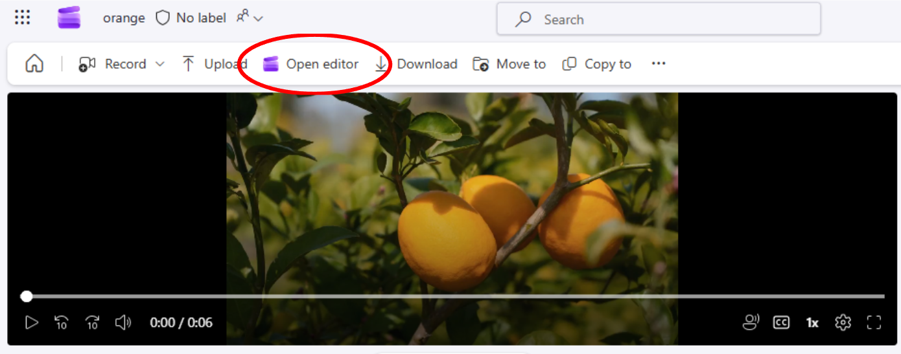
Click Text on the left side menu. Editor opens a menu you can scroll through with different text options, including text with different styles.
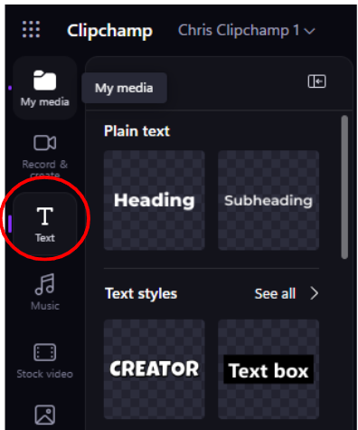
Select one option and drag it over to the timeline, above where you want it to appear in the video. A textbox appears in the preview and a colored block appears on the timeline. Optionally, click and drag one edge of the colored block to adjust how long the text appears in the video.
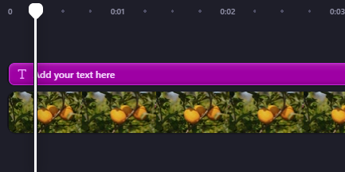
Click inside the text box in the preview.
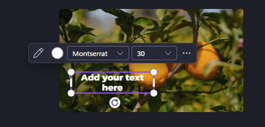
Type in whatever you want the text to say. Review your video to ensure the title card appears at the right moment and looks the way you want.
Click on the title from the timeline. The text property menu opens on the right where you can customize the text.
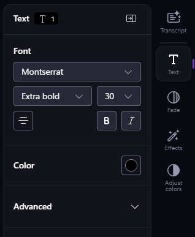
Click on the dropdown arrow beside the font name. A scrollable dropdown menu opens with different font choices, including headings, subheadings, and body text.
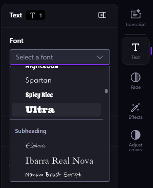
Select the desired font. The text will automatically change to the chosen font.
Open the text property menu.
Click on the alignment icon from the text property menu.
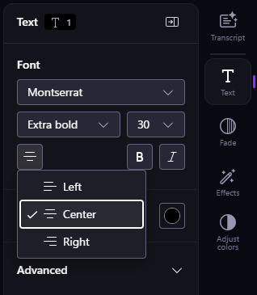
Select from the three options: Left, Center, or Right. The text within the box follows the alignment you choose.
Navigate to the preview and click on the text.
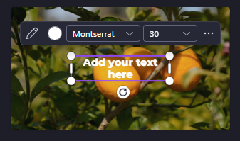
Click and drag the corners of the text box to adjust its size.
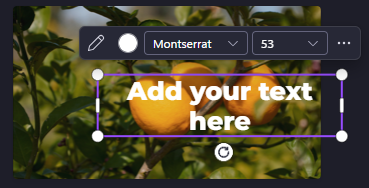
Navigate to the Color section of the text property menu. Depending on what text/text style you selected, the default color will be different.
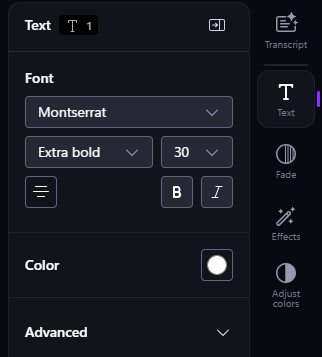
Click on the colored circle in the menu. Depending on the text/text style you selected, the color options offered will be different.
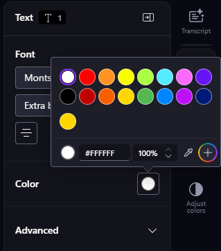
Click on the desired color or type in a HEX value. The text automatically changes to the color you choose.
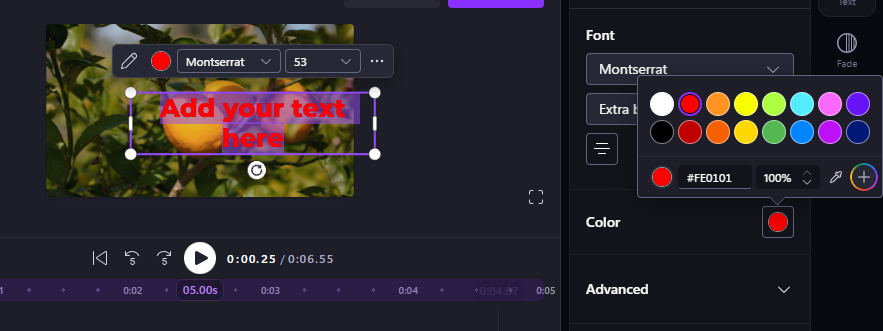